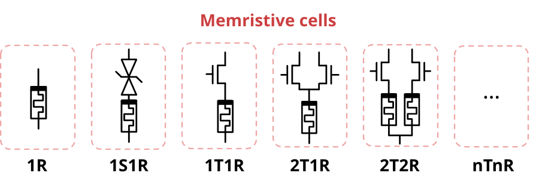
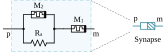
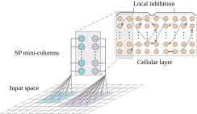
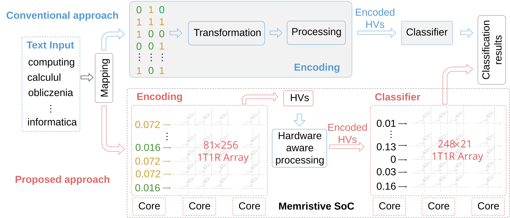
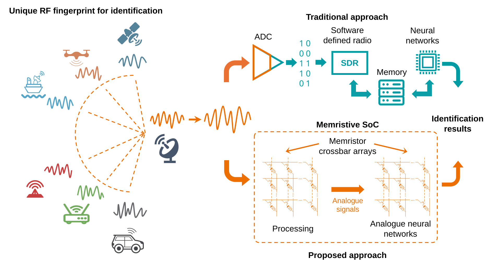
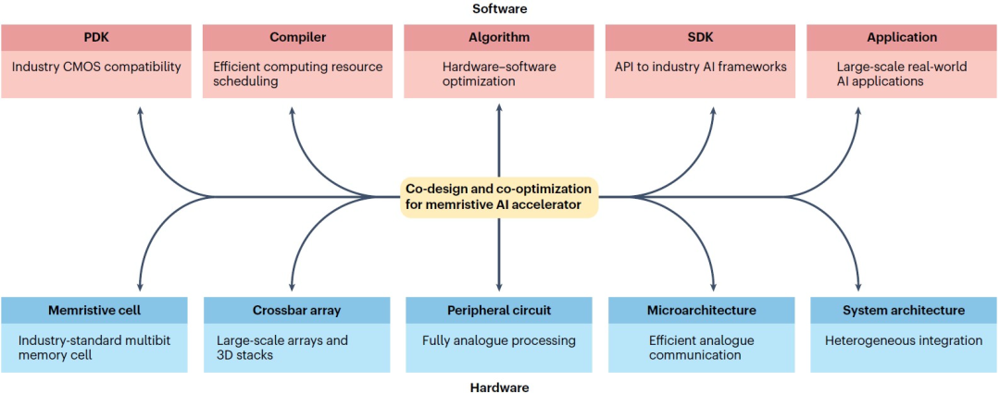

Assistant Professor
Min H. Kao Department of EECS
Tickle College of Engineering
Foundational AI Cluster
University of Tennessee, Knoxville
Email: yihuang@utk.edu
Address: Min H. Kao Building, Room 431, 1520 Middle Drive, Knoxville, TN 37996
Research Vision
The Challenge: The Gap Between AI and Human Intelligence
Artificial intelligence (AI) has become part of our everyday lives, powering everything from voice assistants to medical diagnostics. But this progress comes at the cost of unsustainable scaling in data and energy consumption. A huge gap persists between AI and human intelligence, particularly in energy efficiency, where data centers behind AI consume as much electricity as small cities while the human brain operates on the energy of a single meal, and in cognitive capability, where AI requires massive datasets to learn tasks that humans can master from limited experience.
The Goal: Human-level Energy Efficiency and Cognitive Capability
Our research vision is to close this gap through a hardware-software co-design paradigm that spans multiple layers of Electrical Engineering and Computer Science (EECS) and draws inspiration from cognitive neuroscience. The ultimate goal is to approach the energy efficiency and cognitive capabilities of the human brain, enabling next-generation AI systems across a broad range of applications in our daily lives.

The Approach: A Cross-layer Co-design Framework
We pursue this vision through analog in-memory computing (AIMC) systems inspired by the human brain and built upon emerging memory devices. This approach emulates the operating principles of biological neural systems: data is processed where it is stored and computation operates directly on analog signals.
Building on our prior work (see figure above), our approach centers on a cross-layer co-design framework that spans devices, circuits, architectures, algorithms, and applications:
We model emerging memory devices, including non-volatile and volatile memristors, to establish the physical foundation for AIMC hardware that exploits their rich analog dynamics.

We design analog and mixed-signal circuits that leverage these device-level dynamics to emulate the stochastic and temporal behavior of biological synapses and neurons.

We develop hierarchical, distributed architectures with efficient on-chip communication across analog and digital domains, enabling multilayer information processing and highly parallel computation.

We co-design neural network structures and on-chip learning algorithms optimized for brain-inspired hardware substrates, incorporating spike-based, event-driven, and analog features to enable real-time on-chip learning.

We integrate these energy-efficient, low-latency systems into sensors, wearables, and mobile devices to address a wide range of edge applications that require instantaneous intelligent decisions with minimal power.

We build energy-efficient and intelligent AI systems by bridging AIMC hardware with brain-inspired architectures and algorithms, harnessing hardware-software co-design for next-generation AI.
